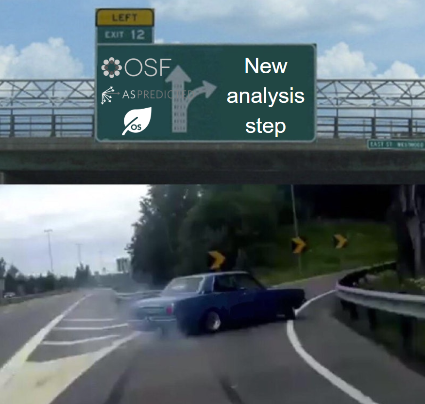

Preregistration#
When we preregister, we are specifying our research plan in advance.
Usually, the things we preregister will include:
Our hypotheses
The design of the study
The sample size and stopping rule
Data cleaning steps
The analyses
The preregistration is saved as a permanent, timestamped record of the researchers’ plans before conducting an experiment. When writing reports or articles, we can link the reader to the preregistration, to show whether we stuck to our original plans.
As part of the ExPra, you will be asked to preregister your study on LIFOS.
Why Preregister?#
Psychology has Low Replicability#
Something you are likely to have come across in Psychological Science is the “Replication Crisis”. This refers to the issue of many published findings not being reliably replicated by other researchers.
Evidence for low replicability in Psychology:
Open Science Collaboration (2015) ran direct replications (i.e., reproducing the exact methods) of 100 Psychology studies from 3 journals, but only 39/100 were considered to have replicated.
Camerer et al. (2018) ran direct replications of 21 social science studies in two “high-impact” journals, Nature and Science. 13/21 effects were replicated.
Klein et al. (2018) ran direct replications of 28 published findings. 15/28 effects were replicated.
“Questionable Research Practices”#
“Questionable Research Practices” (QRPs) are practices researchers might employ in research that fall short of outright misconduct (e.g., data manipulation/fabrication), but which may affect the trustworthiness or accuracy of scientific results. It has often been argued that different questionable research practices contribute to the low replicability of psychological science.
Examples of Questionable Research Practices:
Hypothesising after the results are known (“HARKing”): HARKing refers to the practice of coming up with a hypothesis that could explain the observed results, after the experiment has been conducted, and acting as though the hypothesis was predicted from the beginning.
Cherry-picking: Excluding or including observations depending on whether they are interesting for your research question. For example, you might exclude 5 participants aged <21 years, simply because your effect disappears when they are included.
Optional Stopping: You keep collecting data from new participants, and only stop once the effect is significant. This is problematic because of the logic underlying null-hypothesis significance testing.
Selective Reporting: You only report the tests, results, variables, studies, etc. that revealed a significant result. For example, you might have three ways of measuring depression, but only report the one that revealed a significant effect.
…
There are many more practices that are sometimes considered Questionable Research Practices. For example, Nagy et al. (2025) provide a list of 40 examples!
Questionable research practices are also not the only thing that contributes to low replicability. For example, there are discussions around poor theory development, career incentive structure, and statistical practices.
Preregistration as a Solution#
Preregistration tries to address possible issues like the Questionable Research Practices above, by having researchers specify their decisions before the study is conducted.
For example:
Questionable Research Practice |
How it is addressed in Preregistration |
|---|---|
Hypothesising after the results are known (“HARKing”) |
Hypotheses are preregistered, before any data are collected |
Cherry-picking observations |
Inclusion and exclusion criteria are preregistered |
Optional stopping |
Sample size is preregistered and justified |
Selective reporting of tests, variables, studies, etc. |
All tests, variables, and studies are preregistered |
… |
… |
As well as avoiding such practices, preregistration can improve transparency and credibility. To check that an article for a study matches the original plan, you can just compare it to their timestamped preregistration.
But why do we have to preregister our studies?#
You will be asked to preregister your studies as part of the ExPra. This preregistration also contributes to your grade at the end of the course.
We have included preregistration in the course because it is becoming an increasingly common1 part of the research cycle. We want to teach you how to conduct research in the ExPra, and preregistration is an important skill that you will need to be able to do this.
Understanding preregistration will also be very useful for conducting your thesis, as you are likely to be asked to preregister this.
Finally, it is a useful skill when reading literature - if you come across an article that is preregistered, you will be able to evaluate the preregistration and how well it describes the reported study.
How to Preregister#
You will submit your preregistrations on LIFOS. On LIFOS, you will fill in a template with the following sections:
Devaiting from Preregistations#
Sometimes, we might preregister something, and then later change our minds. There is nothing inherently wrong with deviating from a preregistration!
For example, imagine that you preregister that you will exclude all trials which participants took more than 2 seconds to respond to. This might have seemed like a very sensible decision while writing your preregistration. Now imagine that 1 month later, you have completed the data collection, and realise that this rule would mean that 80% of your data would be excluded! In this case, you might want to argue that the original rule for exclusion was actually inappropriate.
Deviating from your preregistered exclusion criteria would probably make sense in such cases. However, you should follow the following tips when writing your report, to ensure that you are clear about what was changed and why:
Be transparent and explicit: explain exactly which aspects of your preregistration were altered - what they were changed from, and what they were changed to.
Justify the changes: provide the reasons why you decided to deviate from your original plan.
Show the impact: if the deviation is a change to your analysis, consider including an appendix to show how your results would have looked if you had stuck to the original plan.
For more information on reporting preregistration deviations, see Willroth and Atherton (2024).
Acknowledgments
This section was contributed by Jack Taylor.